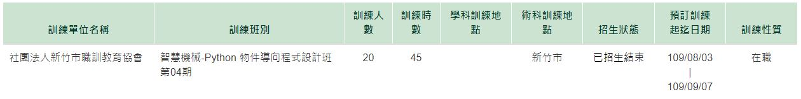
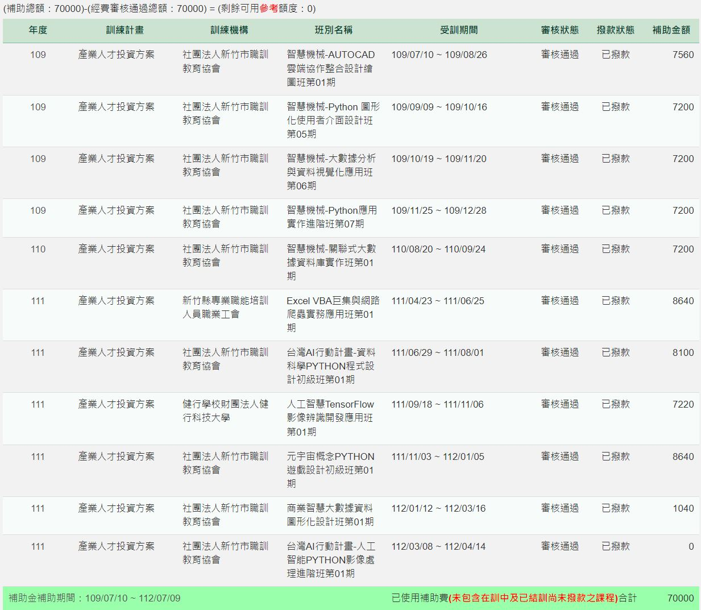
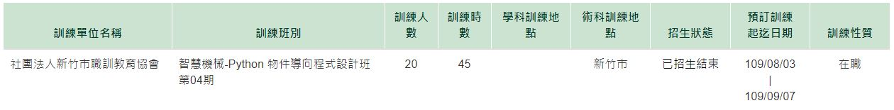
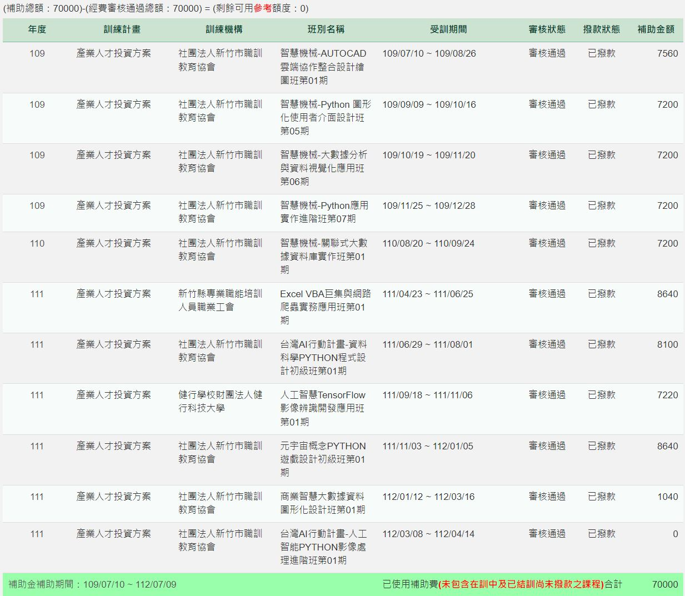

江品毅的個人簡介
擁有七年專案工程師的經驗，主要是規劃IIOT相關案件，工作內容為報告製作、監工、測試、驗收及其他雜務，鮮少有機會自己動手寫程式。
電機系畢業轉戰光電所的我，對於程式相關課程都能得心應手，但直到工作後才發現自己喜歡寫程式，因此希望能走上真正的軟體工程師之路。
最大的興趣是旅遊，大頭照就是在紐西蘭第一次開大型露營車時，因為前一天不小心發生擦撞還驚魂未定，然後硬擠出笑容拍出來的照片。
電機系畢業轉戰光電所的我，對於程式相關課程都能得心應手，但直到工作後才發現自己喜歡寫程式，因此希望能走上真正的軟體工程師之路。
最大的興趣是旅遊，大頭照就是在紐西蘭第一次開大型露營車時，因為前一天不小心發生擦撞還驚魂未定，然後硬擠出笑容拍出來的照片。
為了成為軟體工程師，做過什麼努力？
除了學校期間有學習部分程式課程外，在工作期間有使用C#自行開發數十個WinForm小程式，功能上大多以取代重複性數據整理工作為主。
2020年7月因緣際會下自費參加新竹職訓教育協會的Python假日初級班，讓第一次接觸Python的我覺得非常有趣，因此開啟了Python的學習之路，接著自費參加下圖的Python物件導向程式設計班，並於下一期的圖形化介面設計班花費一個晚上的時間獨力完成作業，將範例程式「以物件的方式改寫並於動畫中創造出多個物件」。

接下來都會利用下班時間持續上課進修Python及SQL，後來因為Python久未使用有點生疏，因此於2022年又再次參與課程，兩次長達半年的密集學習，讓我對於Python有信心可以解決大部分的問題，下圖是我在職訓局使用產業人才投資方案3年7萬的上課狀況。

其中在遊戲設計班利用下班時間完成作業彈性碰撞動畫，但由於距離學生時期有點遠，對於普物跟數學早已生疏，因此碰撞方式不完全符合物理意義，而且還有些小瑕疵並沒有繼續修正。
影像處理進階班時，有利用假日時間完成作業，製作一個可以同時看複數圖檔的程式，包含了排版及影像縮放不變更比例等功能。
2023年開始有在自強基金會上一些短期課程，如Linux驅動程式與應用程式設計就是使用樹莓派來做一些C跟Python的相關程式應用，AIoT with Cloud從無到有-實作課程全端開發則是以老師做過的Project來示範AIoT可以做哪些應用，資料科學平台開發實務-Python and Angular則是與網頁前後端開發最相關的課程，但是由於課程時間較短，因此只能對於網頁前後段有一個初步的概念而已。
於2024年3月離職前自行開發出一個以LINE BOT結合Whisper，作為協助會議記錄的輔助程式，以語音辨識的方式將語音轉為文字，運作在公司資訊機房的主機上，可省去聽錄音檔的時間及長時間對耳朵造成的傷害。
2020年7月因緣際會下自費參加新竹職訓教育協會的Python假日初級班，讓第一次接觸Python的我覺得非常有趣，因此開啟了Python的學習之路，接著自費參加下圖的Python物件導向程式設計班，並於下一期的圖形化介面設計班花費一個晚上的時間獨力完成作業，將範例程式「以物件的方式改寫並於動畫中創造出多個物件」。

接下來都會利用下班時間持續上課進修Python及SQL，後來因為Python久未使用有點生疏，因此於2022年又再次參與課程，兩次長達半年的密集學習，讓我對於Python有信心可以解決大部分的問題，下圖是我在職訓局使用產業人才投資方案3年7萬的上課狀況。

其中在遊戲設計班利用下班時間完成作業彈性碰撞動畫，但由於距離學生時期有點遠，對於普物跟數學早已生疏，因此碰撞方式不完全符合物理意義，而且還有些小瑕疵並沒有繼續修正。
影像處理進階班時，有利用假日時間完成作業，製作一個可以同時看複數圖檔的程式，包含了排版及影像縮放不變更比例等功能。
2023年開始有在自強基金會上一些短期課程，如Linux驅動程式與應用程式設計就是使用樹莓派來做一些C跟Python的相關程式應用，AIoT with Cloud從無到有-實作課程全端開發則是以老師做過的Project來示範AIoT可以做哪些應用，資料科學平台開發實務-Python and Angular則是與網頁前後端開發最相關的課程，但是由於課程時間較短，因此只能對於網頁前後段有一個初步的概念而已。
於2024年3月離職前自行開發出一個以LINE BOT結合Whisper，作為協助會議記錄的輔助程式，以語音辨識的方式將語音轉為文字，運作在公司資訊機房的主機上，可省去聽錄音檔的時間及長時間對耳朵造成的傷害。
如果參與這個訓練，會怎麼安排學習時間？
基本上我已於2024/2/7向公司提出離職申請，因此於2024/3/30開始即為待業狀態，所以可以全神貫注的學習。
訓練過程中會盡量維持正常生活作息，於每週一交辦作業後，即以完成作業為第一優先要務。
訓練過程中會盡量維持正常生活作息，於每週一交辦作業後，即以完成作業為第一優先要務。
是否有想要加入的公司？為什麼想加入該公司？
目前暫時沒有特別想加入的公司，想說訓練的途中順便了解一下產業狀態，並探索一下自己的興趣，再來邊學邊找。
請描述一件產生明顯負面情緒的經歷，如何處理該情緒？
在工作中已經做到過勞還努力完成的案件，即便事前幾天已額外整理一份報告，私下向其他單位某主管解釋過一遍，當下都沒反映任何問題，但因為該主管不了解儀器及工業通訊數據的運作原理，結果會議上又跳針式的質疑案件執行的成果有問題，因此會議上我就直接以原理解釋來回應主管的無知。
該負面情緒會一直影響到一整天的工作心情，於是上班時間會找要好的同事傾訴，下班後再找朋友傾訴，但即便傾訴還不能完全消除負面情緒，所以隔天乾脆好好放自己一天假，做一些放鬆心情的事情，讓自己不再去想這些事，反正最後時間證明事實就是如此，沒有犯錯也不必拿別人的過錯懲罰自己，因此就逐漸釋懷了。
該負面情緒會一直影響到一整天的工作心情，於是上班時間會找要好的同事傾訴，下班後再找朋友傾訴，但即便傾訴還不能完全消除負面情緒，所以隔天乾脆好好放自己一天假，做一些放鬆心情的事情，讓自己不再去想這些事，反正最後時間證明事實就是如此，沒有犯錯也不必拿別人的過錯懲罰自己，因此就逐漸釋懷了。
關於這份申請網頁，分享一個開發時的技術心得。
原來放圖片在網頁上，要按照平常網頁上看到的方式顯示是這麼困難的一件事情，要先了解flex怎麼用，然後width不能用指定的px，而是要用%才會按照頁面大小自動調整，而且要大量的使用div才能逐一將內容區塊化，以方便排版，真的還有很多東西要學。
請用簡短兩三句話，描述對你而言，最重要的一項人際交往原則。
人與人之間應相互尊重，不會尊重別人的人，也不會得到別人的尊重。
其他想要對我們說的事情？
拜託錄取我，我真的很想要學網頁前後端，因為我從工業控制開始就一直很想要自己寫網頁去呈現即時資料、讀取歷史資料或其他應用，但是苦於大部分的紮實課程都安排在上班時段，根本沒有辦法抽空去上課，這次剛好趁離職有時間可以好好學習自己想學的東西，我會很努力積極地學習的！